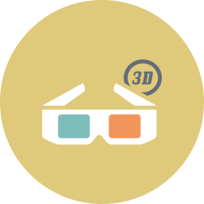

《计算机硬件技术基础》
课程编号：3112100940
课程名称：计算机硬件技术基础 （48学时）
Fundamentals of Computer Hardware Technology
先修课程：大学计算机基础
适用专业：数字媒体技术
内容提要：本课程是数字媒体技术专业的一门计算机基础课。课程主要目的是使学生明确计算机硬件体系结构，从概念、基本功能、外部特性、标准等方面了解计算机及其外部设备，重点是微型计算机硬件结构及工作原理，包括计算机工作原理、微机的基本指令系统、汇编程序设计的一般方法，以及微处理器结构与时序、中断原理与工作机制、存储器、总线及接口电路、外部设备等。通过本课程的学习，培养学生利用硬件与软件相结合的方法分析解决相关领域问题的思维方式和初步能力，为在本专业中使用计算机进行软硬件应用的开发打下基础。
选用教材：《计算机硬件技术基础》（第二版）、焦明海等编著、清华大学出版社、2012年1月
《微机原理与接口技术》（第二版）、田辉，徐惠民，孙全，苏放，刘瑞芳，许桂平编著、高等教育出版社、2011年3月
《计算机网络与因特网》
课程编号：3112100570
课程名称：计算机网络与因特网 （48学时）
Computer Networks and Internets
先修课程：大学计算机基础
适用专业：数字媒体技术专业
内容提要：本课程将着重介绍计算机网络和因特网的基本原理和技术，主要内容包括计算机网络和因特网分层结构；数据传输原理、传输媒介、信道编码、传输模式等相关知识；以分组交换为基础的局域网原理、有线局域网、无线联网、广域网等技术；网络性能评价、TCP/IP协议、路由协议等互联技术；还包括因特网编程、各种因特网传统应用和网络新应用。通过本课程让学生加强对计算机网络和因特网的系统结构、协议、技术和应用的理解，培养学生应用算机网络和因特网的知识分析和解决问题的能力 。
选用教材： 《计算机网络与互联网(第五版)》(英文影印版)、 Douglas E. Comer、清华大学出版社、2010年9月
《计算机网络与互联网》、Douglas E. Comer, 林生，范冰冰，张奇支，黄兴平译、机械工业出版社、2010年8月
《计算机图形学》
课程编号：3112100590
课程名称：计算机图形学 （48学时）
Computer Graphics
先修课程：大学计算机基础、高等数学、线性代数、C++高级语言程序设计、数据结构
适用专业：数字媒体技术
内容提要：计算机图形学是数字媒体技术专业必修的专业基础课，本课程的主要内容包括：计算机图形系统的软硬件结构、几何变换、三维观察、曲线曲面、几何建模、分形几何、消隐算法、光照模型、光线跟踪、纹理映射、交互输入方法、计算机动画等。通过本课程的学习，使学生掌握计算机图形学的基本原理和基本方法，为今后从事计算机图形处理以及计算机动画、游戏开发等方面的研究工作打下良好的理论基础与实践基础。
选用教材：《计算机图形学》（第四版）（英文版）、Donald Hearn, M.Pauline Baker、北京电子工业出版社、2012年2月

《视听语言》
课程编号：3112100580
课程名称：视听语言 （48学时）
Audio-visual Language
先修课程：无
适用专业：数字媒体技术、数字媒体艺术
内容提要：视听语言用理论分析结合影片实例的分析方法，主要讲授电影的画面造型语言，镜头剪辑，声画关系等内容。重点介绍蒙太奇思维方法和创作技巧，视听元素以及元素之间的关系，电影的基本结构手段等内容，通过视听语言的学习，可以提高影视欣赏水平和艺术修养，加深对电影视听元素的理解，增强学生对影视作品分析与鉴赏能力，提高视听创作水平。
选用教材：《影视视听语言》 、张菁，关玲、中国传媒大学出版社、2008年版
《素描与色彩》
课程编号：3112100100
课程名称：素描与色彩 （48学时）
Sketch and Chromatology
先修课程：无
适用专业：数字媒体技术
内容提要：素描与色彩是造型艺术的主要表现形式，由于素描在训练造型能力和表现能力方面的重要作用，几乎所有的造型艺术门类都把素描列为重要的基础课之一。素描课程教学主要从传统的素描学习入手，通过对造型的基础知识与规律的认识与理解，提高学生的造型能力和创造性思维。包括对透视学、结构学、解剖学等自然科学规律的认识和掌握。通过色彩课程研究色彩与图形、空间的关系和相互作用；提高学生的审美意识和色彩运用能力，为在专业设计中合理运用色彩功能大下良好的基础。色彩课程通过理论与实践训练相结合的教学指导，使学生具备系统的色彩理论知识，深刻领会色彩文化含义。熟练地掌握色彩表达技能，并在此基础上，形成良好的色彩审美修养与判断力；培养学生具备良好的色彩创作能力。通过素描与色彩课程的学习，使学生在艺术创作与设计中具备综合运用与表现造型的能力。
选用教材：无
《动画原理Ⅰ》
课程编号：3112100600
课程名称：动画原理Ⅰ （48学时）
Animation Principles Ⅰ
先修课程：素描与色彩、数字媒体概论
适用专业：数字媒体技术
内容提要：动画原理Ⅰ课程是数字媒体技术专业创作方向的重要基础课程，学生要掌握动画技法与动画运动规律的主要内容。动画原理课程的主要内容包括了解动画制作的基本流程；理解基本的运动力学原理；掌握基本的运动规律，包括人物的基本运动规律、动物的基本运动规律以及自然现象运动规律等基本原理技法。通过本课程的讲授与设计实践使学生掌握绘制动态十五的相关技巧，逐步培养创造运动、表现运动的思维，从而使设计构思到艺术实现的途径更加顺畅。
选用教材：无

《动画原理Ⅱ》
课程编号：3112100610
课程名称：动画原理Ⅱ （32学时）
Animation Principles Ⅱ
先修课程：素描与色彩、数字媒体概论、动画原理Ⅰ
适用专业：数字媒体技术
内容提要：《动画原理Ⅱ》是数字媒体技术专业创作方向的重要课程，学生要掌握人物运动规律以及动物运动规律主要内容。包含人物的各种情绪的表现技法，以及在不同的故事情境当中如何通过人物动作塑造角色；动物的运动规律包含兽类、鱼类、鸟类、两栖类、家禽类等等，详细了解各种常见的动画规律的基本技法；理解如何通过创造运动以表现情绪；掌握个性化动作的设计方法。通过本课程的讲授与设计实践使学生掌握创作运动的基本技法，培养创造运动、表现运动的创造性思维。
选用教材：无
《数字媒体采集》
课程编号：3112100690
课程名称：数字媒体采集 （48学时）
Digital Media Acquisition Technology
先修课程：数字信号处理、计算机硬件技术基础
适用专业：数字媒体技术
内容提要：数字媒体采集技术是数字媒体数据获取、数字化处理相关的综合应用技术，以传感器、信号的测量和处理、数据存储等先进技术为基础。本课程主要讲授数字媒体数据采集的原理和关键技术，包括传感技术、信号处理技术、音频采样及量化技术、图像采样及处理技术、视频采样及压缩编码技术、文本信息采集和检索技术等。通过上机实验及课程讲解，使学生理解数字媒体数据的信号来源、信号特征、数据采样与处理方法，培养学生运用软、硬件结合实现数字媒体信息综合采集与处理的能力。
选用教材：自编
《移动应用开发》
课程编号： 3112100700
课程名称： 移动应用开发 （32学时）
Mobile Application Development
先修课程：大学计算机基础、 数据结构
适用专业：数字媒体技术
内容提要：随着移动通信的飞速发展和移动终端的性能提高，移动应用的开发需要越来越迫切。目前Android智能手机已占领绝大部分市场，Android是一个真正意义上的开放性移动设备综合平台，它包括操作系统、用户界面和应用程序。通过该课程的学习，学生在了解Android平台的体系结构的基础上，将逐步掌握移动终端应用开发的关键技术，重点包括Android系统的事件处理机制和常用方法，如图片和文本的载入与释放、图形绘制方法、音频的播放等；移动游戏开发的完整过程，如Android游戏程序架构、精灵属性的实现及滚屏技术；以及Android的GPS定位系统、重力感应、相机系统、网络技术等。最终使学生具备设计和实现完整Android游戏与其它移动应用的能力。
选用教材：自编教材
《三维动画Ⅰ》
课程编号：3112100620
课程名称：三维动画Ⅰ 48学时
Three-dimensional AnimationⅠ
先修课程：素描与色彩
适用专业：数字媒体技术
内容提要： 《三维动画Ⅰ》是数字媒体技术专业的一门专业课程，通过本课程的学习，能够使学生了解计算机三维动画技术的基本情况，理解三维动画的制作原理，熟悉三维软件的工作流程，并能够掌握三维模型创建、材质与动画编辑的基本技能。
课程内容主要包括：了解并掌握二维样条曲线的绘制与编辑，并能够利用各类修改器完成基本的三维模型创建；掌握材质编辑的基本方法，重点掌握利用贴图修改器进行基础材质编辑的技能；掌握曲线编辑器的使用，熟悉正、反向链接之间的关系，重点掌握动画控制器的灵活应用。
选用教材：《三维动画制作基础》 贾云鹏著 海洋出版社2006年出版
《三维动画Ⅱ》
课程编号：3112100630
课程名称：三维动画Ⅱ 32学时
Three-dimensional Animation Ⅱ
先修课程：三维动画Ⅰ 动画原理Ⅰ
适用专业：数字媒体技术
内容提要： 本课是《三维动画Ⅰ》课程的进阶课程，主要是在掌握三维动画制作基本技能的基础上，进一步了解高级多边形修改器和角色模型的创建技巧；掌握复杂材质编辑和贴图的处理方法；理解高级光照和骨骼与蒙皮等技术原理，熟悉各种特殊效果的解决方案以及虚拟摄影机的使用方法；包括粒子技术、布料及毛发技术、动力学模拟、渲染器等，同时掌握复杂动画编辑的技巧，从而利用所掌握的技能完成三维短片和三维游戏的制作， 辅助完成二维动画短片及影视特技的制作。
选用教材：《三维动画制作基础》 贾云鹏著 海洋出版社2006年出版
《计算机游戏开发》
课程编号：3112100710
课程名称：计算机游戏卡发 （32学时）
Development of Computer game
先修课程：计算机图形学 、三维动画原理
适用专业：数字媒体技术
内容提要：《计算机游戏开发》主要讲述基于游戏引擎开发三维网络游戏的过程、方法及关键技术。课程要求学生能综合运用三维建模技术完成游戏场景的搭建和角色的设计，同时完成角色动画设计，在此基础上利用脚本语言，借助游戏引擎的强大功能实现游戏创意。通过课程学习，学生将了解游戏的种类、游戏开发流程、团队组成与分工等基本概念，重点掌握游戏中的光照、碰撞检测、粒子系统、动画及控制，摄像机控制、音效控制、网络同步等技术，同时掌握游戏图形界面设计方法。本课程在教学过程中选用的游戏引擎是Unity3D，游戏脚本语言选用JavaScript。
选用教材：《Unity 3D Game Development by Example Beginner's Guide》 、Ryan Henson Creighton
《数字音频处理》
课程编号：3112100720
课程名称：数字音频处理 （48学时）
Digital Audio Processing
先修课程：视听语言、多媒体应用软件设计
适用专业：数字媒体技术
内容摘要：本课程是数字媒体技术专业的一门专业课，通过课程学习让学生在理解物理声学、心理声学、空间声学、声音艺术等基本知识和理论的基础上，掌握数字音频的采样量化、短时分析、降噪处理、音效渲染、混音剪辑、压缩编码、音频合成等的基本原理和技术实现；能熟练运用数字声音制作的艺术理论和技术手段，设计并实现完整的、体现艺术与技术融合的影视作品或应用程序；并进一步了解内容分析、版权保护的概念和应用。
选用教材：自编讲义
《影视剪辑与合成I》
课程编号：3112100640
课程名称：影视剪辑与合成I （48学时）
Video and Film Editing and Compositing I
先修课程：视听语言
适用专业：数字媒体技术、数字媒体艺术
内容提要：本课程主要讲述电影剪辑的艺术规律，使学生熟练掌握数字剪辑工具，能够完成影视作品创作。课程主要讲授电影的常规剪辑技巧，重点介绍镜头组接技巧，画面运动与剪辑节奏，动作剪辑点和声音剪辑点，色彩控制和情绪表达，影片结构方式与转场，增强形象思维和判断能力，提高影视作品的制作水平。
选用教材：《魅力剪辑——影视剪辑思维与技巧》、周新霞著、中国广播电视出版社、2011年版
《影视剪辑与合成II》
课程编号：3112100650
课程名称：影视剪辑与合成II 32学时
Video and Film Editing and Compositing II
先修课程：视听语言、 影视剪辑与合成I
适用专业：数字媒体技术、数字媒体艺术
内容提要：本课程主要讲授影视合成的工作流程和基本技巧，重点讲解镜头元素的分层提取与合成方法，利用Mask和Rotoscope获得通道，图像的键控技术，多层影像的合成，图像跟踪与稳定，摄影机轨迹运算，跟踪数据的使用，画面色彩调整与关键帧动画的控制等，使学生掌握影视后期合成的方法，了解影视合成的工作流程，提高学生数字化后期制作能力。
选用教材：《数字影像合成：Adobe After Effects CS5/Audition 3.0》 、高盟、高等教育出版社、2011年版
《数字视频处理》
课程编号：3112100730
课程名称：数字视频处理 （48学时）
Digital Video Processing
先修课程：信号与系统 、数字信号处理
适用专业：数字媒体技术
内容提要：《数字视频处理》是数字媒体技术专业的核心课程之一，主要从信号处理角度讲述数字电视、数字电影中涉及基本概念和技术。通过本课程的学习，学生将了解视频的采集、处理、传输及应用涉及的相关知识，理解和掌握视频信号处理的技术和方法，主要包括：活动影像的生理学基础，人眼的光色特性，电影胶片的感光原理，电视扫描原理，视频帧、场、亮度、色度等基本概念，视频信号的数字化，胶片的数字化，数字图像的增强、滤波与JPEG压缩编码技术，数字电影的压缩与打包，数字视频压缩编码技术，数字电视广播DVB以及常见的视频业务与应用等。
选用教材：《数字媒体技术基础》 、李学明 、北京邮电大学出版社 、 2008年12月
《影片分析》
课程编号：3112100740
课程名称：影片分析 （32学时）
Film Analysis
先修课程：视听语言 、镜头画面设计Ⅰ、 镜头画面设计Ⅱ
适用专业：数字媒体技术
内容提要：本课程通过对典型的中外电影作品的实例分析，旨在使学生对具体的电影作品构成有较为感性的认识和较为深入的理解，其基本思路为由一般到特殊，由普及到深入。通过对不同电影作品的分析，使学生了解不同的电影类型以及电影剧作、导演、摄影、录音、美术、剪辑的基本知识及一般规律，并进一步探讨一个作品内的段落构成、段落与段落之间的组合关系、段落内部的剧作架构、段落内部的视听方案；同时，针对本专业要求，本课程特精选出分别在导演、摄影、美术、录音、剪辑上各有突出特色的作品进行分析，研究以上手段如何为具体作品的主题、风格服务。最后，通过对不同电影大师的个案研究，使学生对作者同作品风格之间的关系有较为感性的了解，在熟练掌握基本叙事技巧的同时，鼓励学生风格化的美学追求。
选用教材：无
《影视包装设计》
课程编号：3112100750
课程名称：影视包装设计 （32学时）
Film and TV Production Design
先修课程：影视剪辑与合成
适用专业：数字媒体技术、数字媒体艺术
内容提要：本课是数字媒体创作课程，综合平面设计、三维制作、后期合成和数字剪辑等技能，引导学生进行数字影视包装设计与制作，锻炼学生的团队协作能力和创意设计能力，重点讲授影视包装与设计，栏目片头片尾制作，数字短片设计与制作，通过系列案例讲解与实践，培养学生创作兴趣，提高学生的综合数字制作能力。
选用教材：无
《动画脚本程序设计》
课程编号：3112100760
课程名称：动画脚本程序设计 （32学时）
Animation Script Programming
先修课程：三维动画I/II、 C++高级语言程序设计、多媒体应用软件设计
适用专业：数字媒体技术
内容提要：动画脚本是为扩展动画建模软件的功能而专门设计的脚本语言，它拥有一般程序语言的特点，不但可以在程序内实现几乎所有在动画建模软件界面下的交互操作，而且可以方便地把操作过程记录为脚本语言，在此基础上做必要的修改，就可以完成更为复杂的任务。本课程从简单的实例入手，循序渐进地讲解动画脚本程序设计语言的基本语法，如MaxScript和ActionScript的变量、表达式、函数、脚本插件、事件处理等，并结合一些典型的实例教学，让学生掌握动画脚本语言的基本用法，达到实际应用的目的。
选用教材：自编讲义
《镜头画面设计Ⅰ》
课程编号：3112100660
课程名称：镜头画面设计Ⅰ （48学时）
Storyboard DesignⅠ
先修课程：视听语言
适用专业：数字媒体技术
内容提要：对于影视作品而言，这是一门比《视听语言》和《影片分析》都更为接近于技术操作层面的课程。它以基本的视听语言和对于影视作品的基本知识为基础，以非赏析性的创作态度来学习影片的镜头画面设计技能。而电影电视作品是由一个个的镜头构成的，一部影片的关键就在于镜头内部的构成和镜头之间的衔接。本课程以对于这些镜头方面问题的处理为核心，结合具体的实例，从画面的构成；三角形原理；双人对话；三人及多人对话；插入与切出；画面内的基本运动为主要教学内容来使学生掌握对静态画面的设计。
选用教材：自编讲义

《镜头画面设计Ⅱ》
课程编号： 3112100670
课程名称：镜头画面设计Ⅱ （32学时）
Storyboard DesignⅡ
先修课程：镜头画面设计Ⅰ
适用专业：数字媒体技术
内容提要：本课程是《镜头画面设计Ⅰ》的进阶课程，在学生基本掌握基于叙事的静态镜头画面设计能力的基础上，使学生进一步了解电影场面调度的基本知识，理解画内和画外运动的含义，熟悉摄影机运动的基本方法，最终掌握灵活运用镜头讲述故事及表达情感的技能。在课程的这个阶段将会涉及到大量的实际操作，通过学生自己动手设计各种解决方案并加以实际的拍摄实践训练，经过教师对不同的实践作业进行分析来增强学生对于具体的、实践性的影片镜头的把握能力。
选用教材：自编讲义
《数字版权管理》
课程编号：3112100770
课程名称：数字版权管理 （32学时）
Digital Rights Management
先修课程：大学计算机基础、多媒体基础
适用专业：数字媒体技术
内容提要：数字版权管理是随着电子音频、视频节目在互联网上的广泛传播而发展起来的一种新技术。其目的是保护数字媒体的版权，从技术上防止数字媒体的非法复制，或者在一定程度上使复制很困难，最终用户必须得到授权后才能使用数字媒体。本课程从概念、理论和应用三个角度探讨数字时代的版权保护，涵盖数字版权管理的概念、架构、基于密码学的版权保护、基于数字水印的版权保护，让学生逐步掌握常见的数字版权保护技术的算法思想及其在3G、PC流媒体、IPTV、数字音乐、P2P、电子书上的应用，为今后从事这方面的工作打下基础。
选用教材：教材
《数字版权管理》讲义
参考书目
数字版权管理技术原理与应用、冯明, 唐宏, 陈戈 等著、 人民邮电出版社、 2009.8
数字版权管理、张茹, 杨榆, 张啸 著、 北京邮电大学出版社、 2008.7
密码编码学与网络安全——原理与实践（第四版）、（美）斯托林斯（Stallings,W.） 著、孟庆树 等译、电子工业出版社、2006
数字媒体认识
课程编号：3112101210
课程名称：数字媒体认识 (16学时)
Cognition practice of Digital Media
先修课程：素描与色彩
适用专业：数字媒体技术
内容提要：本课程的主要内容是完成实践写生以及参观交流的学习任务，并通过实践写生环节，提高学生的观察能力以及增强实践创作能力。通过对实际生产基地的参观与考察，使学生比较充分的了解数字媒体专业的具体应用和市场走向，正确认识数字媒体技术专业，明白数字技术在艺术创作中的应用，从而更加明确学习目的。
选用教材：无

C++编程实践
课程编号：3112101220
课程名称：C++编程实践 （2周）
C++ Programming Training
先修课程：大学计算机基础、C++高级语言程序设计
适用专业：数字媒体技术
内容提要： C++是数字媒体系统开发的重要工具之一。本课程通过实践训练学生综合运用C++程序设计基本知识的能力，掌握分析问题、解决问题的方法，提高学生的应用程序设计能力。主要包括C++程序设计方法训练、数字信号的表示及存储编程、数字媒体数据文件的访问及编程等训练。
选用教材：无

动画创作实践
课程编号：3112101230
课程名称：动画创作实践 (48学时)
Practice of Animation Creation
先修课程： 动画原理、镜头画面设计、影视剪辑与合成
适用专业：数字媒体技术
内容提要：本课程是在掌握动画原理基础之上，对动画创作的各个环节进行的一次实践创作，在教学实践中，将根据学生的选择方向，分成二维动画创作小组以及定格动画创作小组。老师将指导学生完成动画制作的各个工艺流程，学生将充分地了解影视动画的技术特点和艺术表现，掌握动画制作工艺流程中每一个制作环节的关联属性及管理属性，并在动画原理、制作技能等方面得到更严谨的锻炼，让学生具备一定的独立完成动画制作的能力。既要强调学生对动画创作理论知识的学习，又要重视学生的创新性思维和实践动手能力的培养。
选用教材：无
数字信号处理实践
课程编号：3112101240
课程名称：数字信号处理实践 (32学时)
Practice of Digital Signal Processing
先修课程：C++高级语言程序设计、数字信号处理、计算机硬件技术基础
适用专业：电子信息工程、数字媒体技术
内容提要：数字信号处理是现代信息处理和传输的基础课程之一，已经成为信号与信息处理、通信和电子、计算机科学和技术等专业的学生需要学习和掌握的基本知识。本实验旨在通过DSP技术讲解和学生亲身直接感知的实验手段，将抽象的数字信号处理技术具体化、现实化，并达到以下目的：了解实时信号处理的基本概念，结合《数字信号处理》课程，加深学生对基本数字信号处理理论的了解；通过合理的实验安排，让学生了解DSP应用开发的基本过程；通过开展与信息处理和通信相关的实验，加深学生对相关专业课程，包括《数字视频处理》、《数字图像处理》、《数字音频处理》等知识的理解。
选用教材：《数字信号处理实验》讲义

算法设计与实现
课程编号：3112101250
课程名称：算法设计与实践 （48学时）
Algorithm Design and Practice
先修课程：C++高级语言程序设计、数据结构
适用专业：数字媒体技术
内容摘要：本课程是数字媒体技术专业的一门实践类课程，让学生在理解算法分析与设计、算法复杂性理论得基本概念的基础上，逐步掌握几种重要的算法设计方法：蛮力算法、分治算法、贪心算法、动态规划、回溯算法、分支限界、概率算法等思想和原理；并通过代表性算法的实践，加深对算法设计主要方法的理解和应用，以及对算法时空复杂性的正确分析，培养学生具有针对给定问题设计和实现高效算法的能力，为后续相关专业课的学习奠定坚实的基础。
选用教材：自编讲义

多媒体应用软件设计
课程编号：3112101260
课程名称：多媒体应用软件设计 （32学时）
Software Design of Multimedia Applications
先修课程：大学计算机基础、C++高级语言程序设计、数据结构、算法分析与实践
适用专业：数字媒体技术
内容摘要：本课程是数字媒体技术专业的一门实践类课程，让学生在理解多媒体软件设计、图形化用户界面编程等基本理论和技能的基础上，逐步掌握图形、图像、音频、视频、动画、游戏等多媒体应用的原理和实现；通过分组学期项目，加深对多媒体应用软件的规划和分析工作的理解，并能进行多媒体软件的设计、实现、集成、调试与改进，为后续相关专业课的学习奠定坚实的基础。
选用教材：自编讲义
数字媒体处理综合实验
课程编号：3112101270
课程名称：数字媒体处理综合实验 （48学时）
Comprehensive Experiments for Digital Media Processing
先修课程：C++程序设计、 数字信号处理、数字图像处理、数字音频处理、数字视频处理
适用专业：数字媒体技术
内容提要：数字媒体处理综合实验课程通过一系列的实验训练学生对数字媒体处理算法的理解及实践能力。包括数字音频、数字图像与数字视频等数字媒体数据的采集、存储、处理、传输环节中涉及的关键算法，训练学生在PC机环境及嵌入式平台下的数字媒体处理算法设计与实现方法。
选用教材：无

短片创作
课程编号：3112101280
课程名称：短片创作 （64学时）
Practice of Short Film Creation
先修课程：动画原理、镜头画面设计、影视剪辑与合成、计算机语言
适用专业：数字媒体技术
内容提要：《短片创作》是数字媒体技术专业的一门专业实践课程，是在大学三年级期末进行的一项综合实践教学环节。通过以分组联合作业的形式，从前期剧本策划到中期拍摄，再到后期处理的一整套短片拍摄流程，使得学生能够综合大学三年的理论知识积累应用到实际的创作过程中。此次实践教学，会涉及到大学三年来理论学习的各个方面，包括：二、三维动画制作；视听语言；镜头画面设计；数字剪辑与合成；计算机语言；音频处理；网络媒体传输等。通过这样的综合实践练习，旨在将理论学习中的技术和艺术有机结合，从而使得理论与实践紧密结合，达到复合型人才培养的教学目的。
选用教材：无

网络游戏实践
课程编号：3112101290
课程名称：网络游戏实践 （2周）
Practice of Network Game Design
先修课程：计算机游戏设计
适用专业：数字媒体技术
内容提要：本课程是《计算机游戏开发》课程的配套实践课程，目的是帮助学生熟悉游戏开发的全过程，掌握三维计算机游戏设计与开发的基本技术和方法，特别是游戏的网络注册、登录、共享与同步技术，综合运用游戏角色设计、场景设计、角色动画、碰撞检测、粒子系统、声音与音效等手段开发制作游戏作品。游戏创作以组为单位进行，每组学生需在两周时间内完成：（1）游戏策划，游戏场景、游戏角色设计，（2）角色建模与动画设计，（3）游戏编程与测试，（4）游戏输出到PC或手机平台进行测试。
选用教材：无